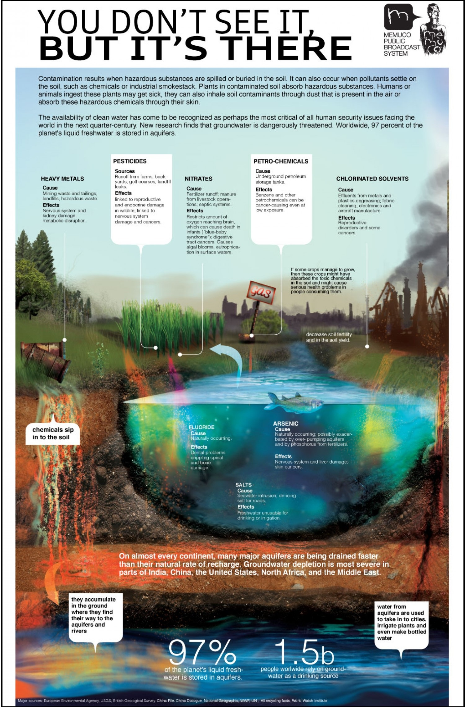

How bad is improper waste management ?
Disposing of waste has huge environmental impacts and can cause serious problems. Some waste will eventually rot, but not all, and in the process it may smell, or generate methane gas, which is explosive and contributes to the greenhouse effect. Leachate produced as waste decomposes may cause pollution. Badly-managed landfill sites may attract vermin or cause litter. Incinerating waste also causes problems, because plastics tend to produce toxic substances, such as dioxins, when they are burnt. Gases from incineration may cause air pollution and contribute to acid rain, while the ash from incinerators may contain heavy metals and other toxins.
Some of the catastrophic effects of today’s poor waste management systems are :
1. Soil Contamination
Ideally, we would like our plastic, glass, metal and paper waste to end up at a recycling facility. It then returns to us as a renewable product. But the reality is entirely different. Have a look at the informative image below.
Contamination occurs by spilling and burying hazardous components in soil. So, we need to be watchful of how we process petroleum hydrocarbons, solvents, pesticides, heavy metals and lead.
2. Water Contamination
Water is an excellent solvent; it can contain numerous dissolved chemicals. As a result, while moving through, water picks up pollution along the way. It often has dissolved substances like various chemicals and gases.Rainfall easily mixes to toxic liquid substances and seeps into the water streams to end up in nearby water bodies. Thus, the neighbourhood fountain, pond, lake or even drinking water taps are susceptible to the dangers of contamination.The victims ? All living organisms including us, humans.
3. Extreme Weather Caused By Climate Change
Firstly, harmful greenhouse gases are created from decomposing waste. These rise up to the atmosphere and trap heat. This adversely causes extreme weather reactions in the form of storms and typhoons.
How else are we impacted? Well, apart from temperature what is also drastically affected is the level of precipitation in the air. From acid rain to severe hail storms or global warming – everything is fair game at present. This also spreads out into other areas with regards to subdivisions such as thermal and radioactive pollution.
4. Air Contamination
Let’s talk about the ozone layer first. A lot of it leaves us feeling hopeless for we feel unable to make necessary changes. We think we cannot consume any less. Even so, we can, at least, follow strict protocol over how it’s recycled.
On the occasions paper and plastic are burned at the landfill, causing landfill gas, the chemicals released which accumulate and contribute to the ozone layer and also hurt the surrounding human population. Methane gas adds to it as well. Besides, with chemicals such as dioxin out there, the air has been proven to have harmful effects on us.
All of it, and especially when improper waste management is concerned, play a significant role in causing global warming.
5. Harm Towards Animal and Marine Life

Despite strict measures to stop it, we keep seeing the continual dumping of garbage, raw or untreated sewage. Any animal or marine life coming in contact gets impacted in the worst of ways. The inevitable formation of algal bloom and clusters contaminates and eventually suffocates marine life such as coral and fish.
We have seen how consumption of fishing lines, cigarette butts, plastic bottles and Styrofoam can kill millions of marine lives each year.
Furthermore, it is a vicious cycle which feeds itself:
⦿ Waste is dumped into the ground
⦿ Absorbed by the soil and groundwater
⦿ Waste contaminates the land on which we grow food and provides water for us and animals
⦿ Waste in the marine life kills fish
⦿ Carcasses float on the surface, and we see mosquitoes feed on it
⦿ The disease carrying mosquitoes now spread sickness and death among the living population
6. Human Damage
Consider the majority of the human population where we do not see any scientific waste management system. Such places may possess a system, but there is no disposal area to be found.
Those who are at significant risk are:
⦿ Children and those who live near such facilities
⦿ Waste disposal workers
⦿ Employees whose workplaces manufacture or come into contact with waste materials
Think about the fires at landfills and its effects on us. Whether coming from the air or its accumulation in our cellars, those landfill gases have been exposed for causing cancer, create respiratory and visibility problems, and the explosion of cans put people nearby at constant risk. Additionally, when we come in contact with waste, it causes skin irritation and blood infections. We also contract diseases from flies which are carriers of illnesses after breeding on solid waste. With regards to mosquitoes, we know, besides feeding on dead fish, they find sewage, rainwater, tires, cans and other objects to be ideal breeding grounds. They carry and spread diseases such as malaria and dengue.
With an abundance of disease-carrying pests, it becomes difficult to be vigilant about waste management facilities. Despite all efforts, for example, rats continue their massive infestation on such facilities and sewage systems. They harm crops, spread diseases such as Hantavirus Pulmonary Syndrome, Leptospirosis, Rat-bite Fever and Salmonellosis.
Waste management is our responsibility for we benefit and suffer from it in radical ways. Education and awareness across all communities, irrespective of their social, economic condition, must be ever-present for as long as life inhabits this planet. A butterfly fluttering its wings 900 miles away from you can cause a hurricane right where you live.
Therefore, significant mismanagement of waste by Turkey and Chile, where only 1% of waste was reported to be recycled, can contribute to global warming. Even if you live far away in Greenland, there is no escape. We must all play a role.